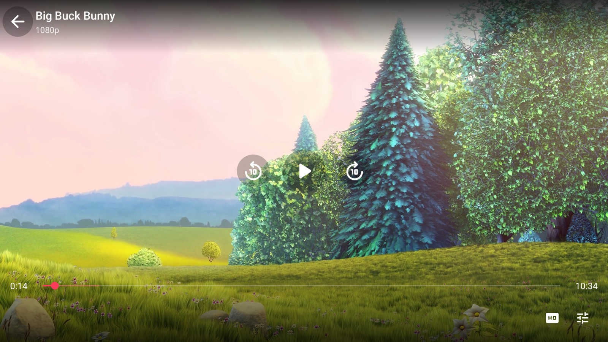
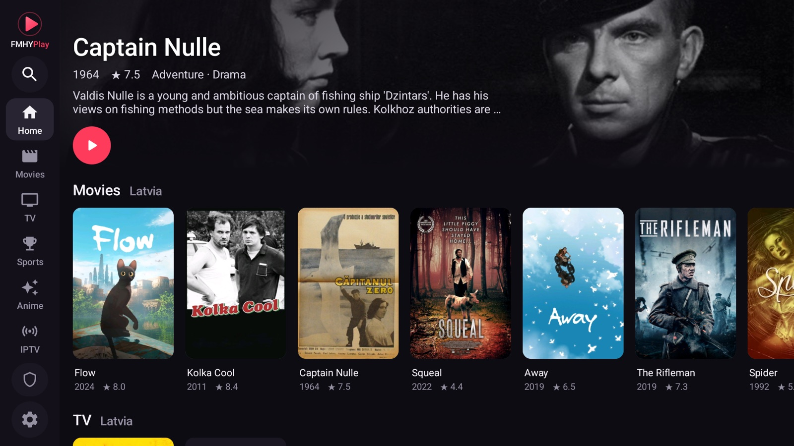
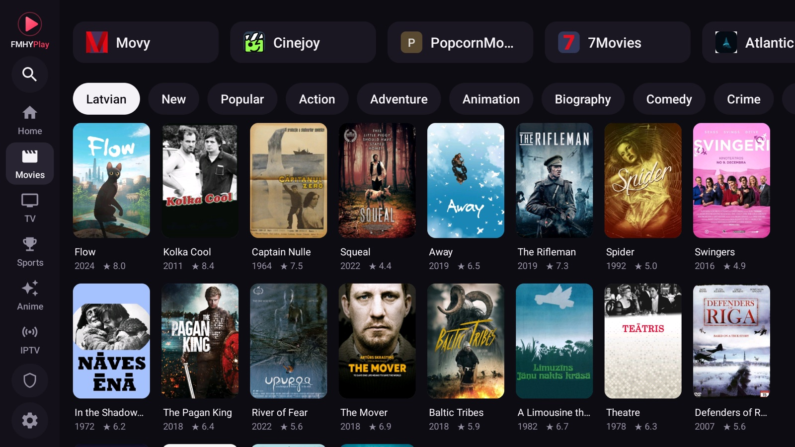
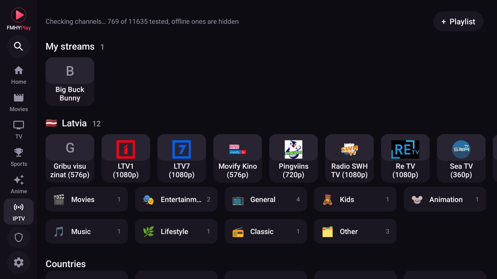
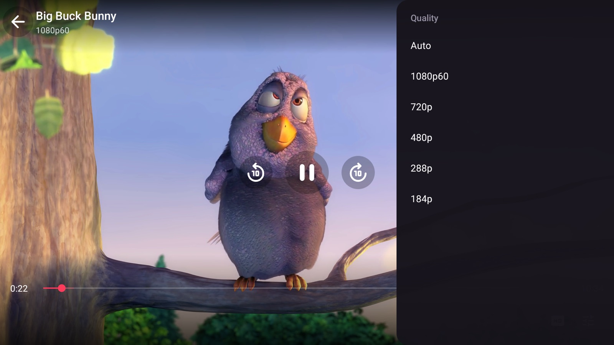
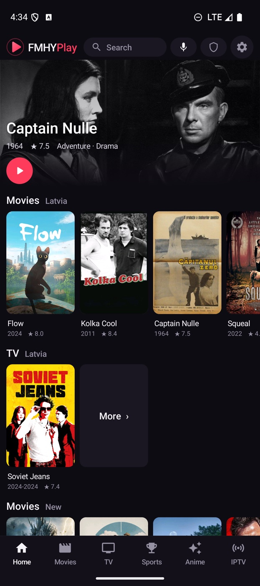
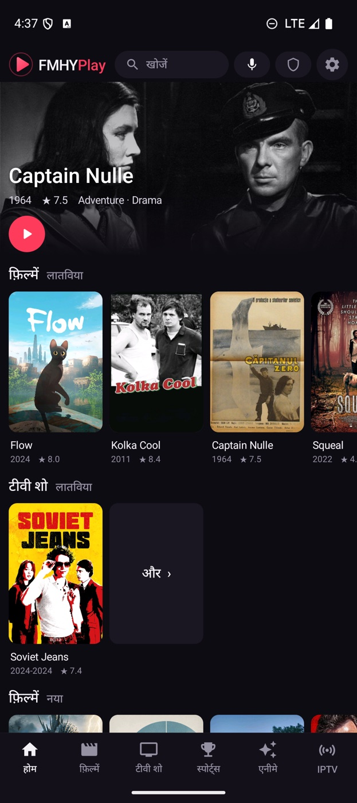
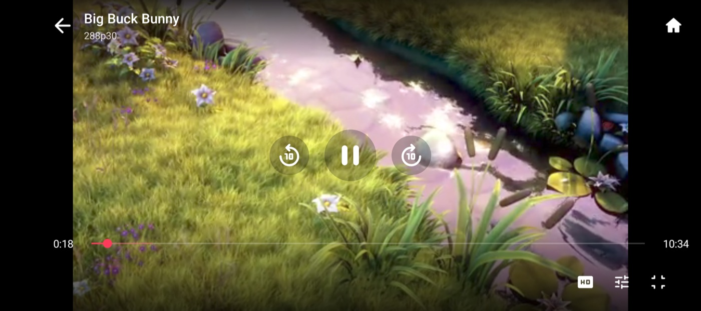
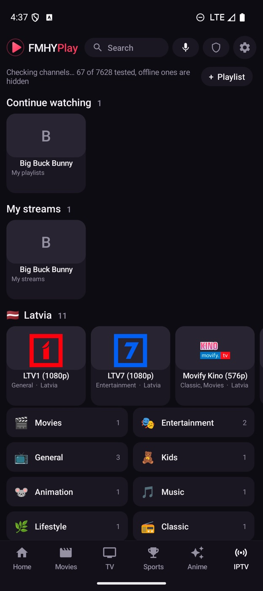

Any streaming site,
a real player.
FMHYPlay opens the sites you choose, finds the video they play and plays it natively: hardware decoding, nothing painted over the picture, and a remote-friendly interface.
DownloadUser guideBuild from source
What it does
Streaming sites are built for a mouse. FMHYPlay keeps the site and replaces the part that does not work on a TV.
FMHYPlayer
Finds the stream the page starts and plays it in ExoPlayer with the hardware decoder. One row of icons for quality, audio, subtitles and more; picture in picture and hold for 2x on a phone.
Series and anime
Episodes, Previous and Next in the player, Skip intro and credits, a Next episode button, and Sub / Dub for anime. Episodes open directly on dozens of sites.
Drives the site for you
Pick a title and the site opens on its page. The player's Episodes, Servers and Quality buttons press the site's own buttons, even inside cross-origin iframes. You never go back to the page. A loading screen with a cat covers the site while the app works, and holding Back for 3 seconds goes Home.
Cast to your TV
Like YouTube: tap Cast in the phone's player and the TV carries on from the same spot, with the phone as the remote. Works with FMHYPlay on the TV, any Chromecast, or DLNA smart TVs.
Subtitles and sound
Subtitles in any language from OpenSubtitles, lined up with the speech by themselves and remembered per title. Volume boost and Dialog boost for quiet voices, and a debug overlay with the stream's resolution, codec, bitrate and network speed.
Resume anywhere
Continue watching remembers your spot on any site or server, with New and Popular for Movies, TV and Anime on Home and one search for everything.
Your language
English, Hindi, Spanish, Portuguese, Indonesian, Arabic and German, picked from the device's language.
Built for the remote
Focus navigation designed for D-pads, a cursor mode for stubborn pages, and a TV launcher. On a phone: brightness and volume swipes, double-tap to skip.
Ad blocking and WARP
Domain, pop-up and redirect blocking (links a site opens in a new window open in the same tab), plus an optional in-app Cloudflare WARP tunnel for the app's traffic only, with no VPN permission.
IPTV
More than 11,000 public channels by category and country, with Category and Language filters and pins. Offline ones are hidden by a background check; add your own playlists, Xtream Codes or Stalker portals.
Trackers
Connect Simkl or PunchPlay with a code, and the movies and episodes you watch are tracked there.
On the TV
Browse sites and a movie and series catalog, search by typing or voice, and pick up where you left off. Android TV, Google TV and Fire TV (Downloader code 9828006, how).




Cast from your phone
Phone and TV on the same Wi-Fi. In the player, tap Cast and pick the TV: FMHYPlay on the TV is recommended, any Chromecast works too. How to set it up

On the phone
The same app and the same player, on a touch screen.





Under the hood
No Gradle
Plain Java and the Android SDK command-line tools, about 11 MB per APK. A clean clone builds with two commands.
Signed releases
Pushing a tag builds both APKs on GitHub Actions, signs them with the project key and publishes a release with checksums.
Private by design
No FMHYPlay account, no analytics, no telemetry. The tunnel is a userspace WireGuard client that only carries this app's traffic.